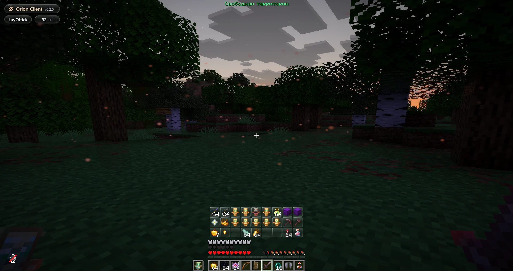

GleamClient
Сетевая игра
Одиночная игра
Откаты
Модули
Настройки Minecraft
Меню
Вернуться к игре
Достижения
Статистика
Настройки
Кейбинд менеджер
Откаты
Сохранить и выйти
Esc
Открыть паузу
Откаты
Клипы
Настройки
Буфер
Назад
Esc
Все клипы
Избранное
Пока нет избранных клипов
Нажми на звезду рядом с клипом, чтобы он появился здесь.
К клипам

Демонстрационный кадр
Запись
Звук
Горячие клавиши
Запись
Длительность
30 секунд
60 секунд
120 секунд
Разрешение
720p
1080p
1440p
Исходное
FPS записи
30 FPS
60 FPS
Качество
Производительность
Баланс
Качество
Битрейт
Авто
Вручную
Звук
Источник звука
Minecraft
Вся система
Микрофон
Горячие клавиши
Сохранить откат
Переключить буфер
Сбросить клавиши